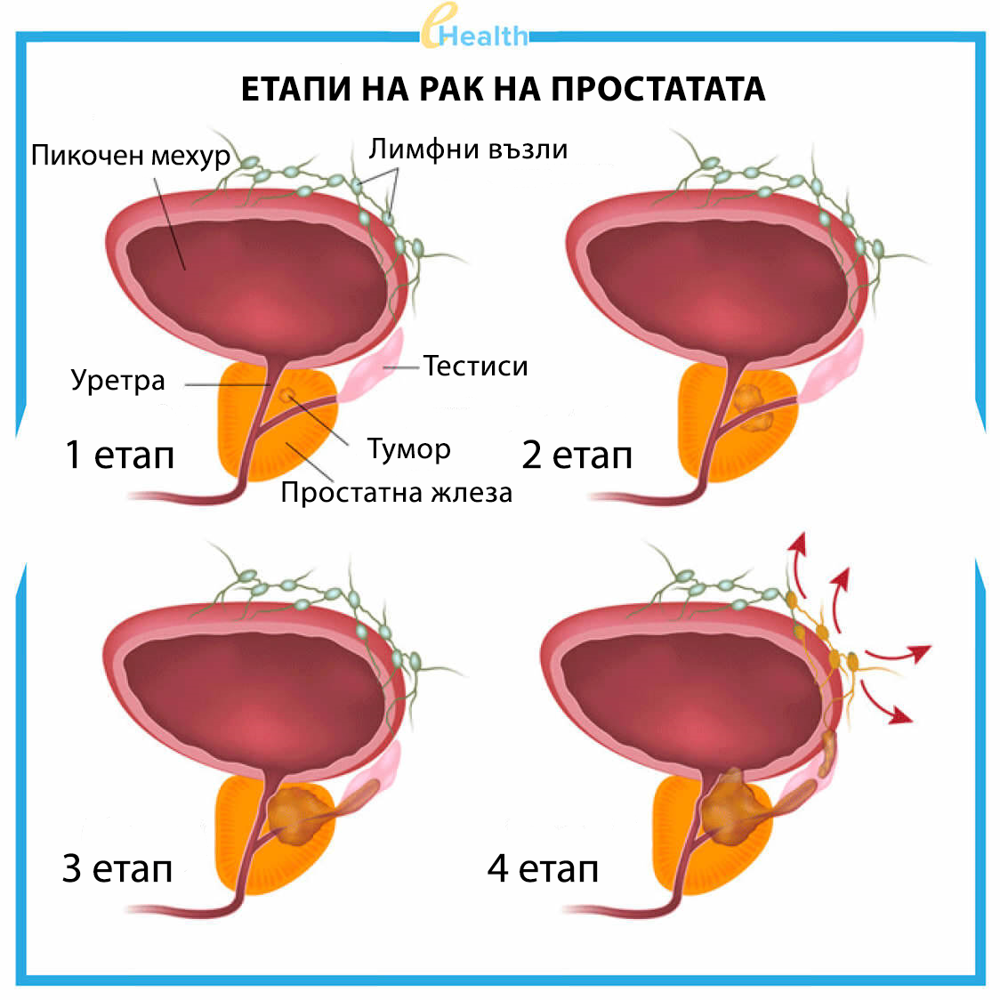
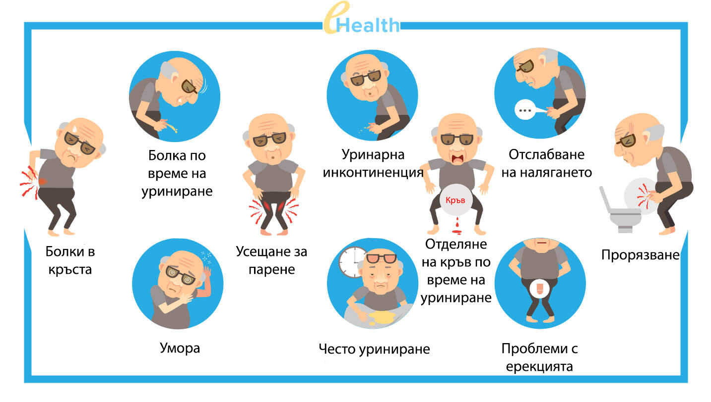
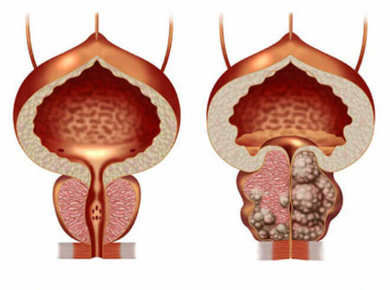

В Израел са се научили да лекуват простатита веднъж и завинаги, само за 2-3 седмици.
(техника е описана по-долу)
Междувременно в България: корумпирани лекари и фармацевти, от година в година крият от хората наистина ефективни, и, при това, евтини лекарства, като назначат вместо тях много скъпи аналози и унизителни процедури! (Ако ви е интересно да научите повече за Израелска техника – прочетете внимателно тази статия)
Простатитът е най-често срещаното заболяване сред мъжете на възраст над 40 години, но в последните години, специалистите отбелязват ужасяващата тенденция за "подмладяване" на тази диагноза. Мъжете на възраст от 20 до 30 години, все по-често търсят лекарска помощ със симптоми на простатит.

Причините за появата на заболяването са следните
- - заседнал начин на живот
- - нередовен сексуален живот
- - инфекциозни болести, предавани по полов път,
- - наследствена предразположеност
- - стрес и заболявания на урогениталния тракт,
В съвременния свят да получиш проблеми с простатата е много просто. При някой, те се появяват в 25 годишна възраст, при други в 45 – и това е само въпрос на време.
Проверете дали имате симптоми на простатит:

През 2018 г. Министерството на здравеопазването публикува страшна статистика: над 55% от мъжете на възраст над 40 години имат проблеми, свързани с простатата. Да се определи дали един мъж има простатит е много просто, дори без минимални познания в медицината, тъй като повечето от симптомите са присъщи само за това заболяване:
-
Резки болки:
- - в долната част на корема, в скротума;
- - в пениса, или около него;
-
Нарушения в работата на отделителната система:
- - честото уриниране, усещане за парене в уретрата;
- - постоянно чувство за "пълен пикочен мехур";
- - затруднено уриниране (слабо налягане);
-
Сексуални разстройства:
- - липса на сексуално желание;
- - намаляване на продължителността и качеството на ерекцията;
-
Проблеми с еякулацията:
- - преждевременна еякулация, или напротив – трудности с неговото постижение;
- - малко количество семенна течност
-
А също така - повишена умора и раздразнителност.
Въпреки очевидните неудобства, много мъже години наред живеят с простатит, без дори да знаят за възможните последствия, някои от които са несъвместими с живота.

Простатитът, който не се лекува, винаги води до аденом на простатата ("Смъртта на мъжа")
От една страна мога да ги разбера, защото спътник на този вид диагноза, често става тежката депресия. Освен това, идентифицирането на простатит предполага необходимостта от редовни прегледи от уролог, който с голяма вероятност, само ще облекчава острите симптоми с помощта на лекарства, "препоръчани от фармацевтите". Излиза, че мъжът не лекува това заболяване! Стига да спрете да взима определени лекарства и симптоми незабавно ще напомнят за себе си.
Как се лекува простатит у нас (или как НЕ трябва да се лекува)
Най-тъжното в цялата ситуация е, че не можете да се отървете напълно от простатита, дори ако полагате максимални усилия.
Стандартните начини на лечение:
- Отиваш в поликлиниката, или на частно: всъщност, това е без значение, защото в края на краищата все пак ще трябва да плащате.
- Лекарят извършва преглед, назначава много анализи. Някои от тях няма да имат никакъв практически смисъл, и се правят за всеки случай – току виж се намери нещо, което може да се излекува. И, разбира се, самите изследвания много често не са безплатни.
- След като резултатите попаднат при лекаря, той поставя диагноза "простатит" и назначава "препоръчаните му лекарства". Това са тези, които са предназначени за облекчаване на симптомите, но не и за лечение. След тях, ще Ви изпишат "залъгалки" от фармакологичните фирми, чиито представители отдавна си сътрудничат с администрацията на поликлиниката, като си разделят приходите от закупените от вас плацебо. Няма да споменавам имената на лекарствата, всичкиги знаят.
- Ето, че стигнахме до най-интересния момент. След като назначи всички "лекарства", милият доктор ще Ви изпрати на ректален масаж на простатата. Това е унизителен и изключително неприятен процес: масажът се прави с пръст, вкаран в ануса. Средно са необходими от 10 до 14 посещения, за които ще трябва да платите.

- И това е само едната страна на монетата. В допълнение към основното лечение, вашият лекар трябва да ви предпише лекарства за възстановяване на потентността и качеството на спермата, а също и нещо за премахване на отрицателните последици от въздействието на по-рано посочените лекарства.
Нека обобщим. Лекуването на простатит в България ще струва около 1500 – 3000 евро годишно. Разликата в разходите е свързана с това, че урологът предписва курс на терапия, като на първо място, изхожда от финансовите възможности на пациента. А ефектът от такъв курс с каквато и да е цена, почти винаги един: симптомите изчезват, пациентът започва да се чувства добре. Но хроничният простатит няма да изчезне, и непременно ще се върне с нова сила, когато завърши предписаното лекаря лечение. Ето защо, човек от година на година е принуден да харчи хиляди евро, влизайки в омагьосан кръг, върху който е построен целият фармацевтичен бизнес
Как лекуват простатит в Израел
В Израел, за да излекувате простатита, дори не е необходимо да се консултирате с лекар. При появата на първите симптоми, е достатъчно да си купите в аптеката едно от лекарствата, чиято ефективност е доказана в продължение на десетилетия. Те не стигат в нашата страната, само защото с тяхна помощ можете веднъж и завинаги да се излекувате от простатита! Естествено, това лекарство е заплаха за бизнеса на нашите алчни фармакологични фирми, защото е много по-изгодно да има хора, който всяка година трябва да отстранят симптомите на заболяването, купувайки всеки път, скъпи залъгалки, отколкото такъв, което ще излекува простатита, благодарение на евтино, но ефикасно лекарство. За разлика от нашата страна, в Израел е много добре развито частното здравно осигуряване. Застрахователните фирми имат интерес, пациентите да ходят на лекар не по-често от два пъти годишно, тъй като сами финансират лекарските услуги, чиито заплатите там са много големи. Затова на фирмите им е изгодно, когато лечението не изисква големи парични разходи и време.
В Израел застрахователните фирми доминират над фармацевтичните, а у нас е обратното. Затова там винаги може да се купи наистина ефективно лекарство от простатит...
Ще се промени ли ситуацията в България?
За голямо съжаление, в момента няма положителна промяна в тази област, тъй като милиардният бизнес на фармацевтичните фирми, по всякакъв начин пречи на появата на пазара на ефективни лекарства.
Само че, аптеките отдавна не са единственото място, от където можете да си купите лекарства. Много хора сега поръчват лекарства чрез сайтовете за официалните дистрибутори. Да вземем например лекарството Prostero, едно от най-ефективните в Израел, и един от малкото, които могат да се купят в нашата страна. Почти веднага след появата си на пазара, то стана много популярно.
Нека видим, каква е разликата между Prostero и най-популярното в българските аптеки лекарство – Prostamol Uno
 Prostero |
 Prostamol Uno |
|
|---|---|---|
| Цена: | Действа оферта, по която можете да купите Prostero с 50% отстъпка! | Около 52 евро за 90 капсули. Среден терапевтичен курс: 3 опаковки = 156 евро |
| Основно действие: | Веднъж и завинаги напълно елиминира простатита, дори хроничен. Достатъчен е един курс на лечение. | Елиминира симптомите на болестта – маскира болката и облекчава проблемите при уриниране. |
| Допълнителни ефекти: | º Повишава либидото º Предотвратява преждевременната еякулация º Увеличава издръжливостта º Нормализира уринирането º Възстановява кръвоснабдяването |
Омекотява изпражненията, подобрява перисталтиката на червата |
| Странични ефекти | Липсват, тъй като всички съставки са напълно натурални | º При честа употреба може да предизвика появата на злокачествени тумори на простатната жлеза º Намалява потентността º Предизвиква храносмилателни проблеми, º Потиска имунната система, допринася за развитието на алергии º Може да стане причина за болки в стомаха |
| Принцип на действие: | Има ефект върху простатата като цяло, благодарение на специално подбрания състав от 6 натурални съставки. Има противовъзпалителен и укрепващ ефект. Премахва цялата патогенна флора от простатата и възстановява нейната структура и функция. | Временно облекчава болката, като маскира заболяването. Състоянието на пациента се влошава, когато той спира да взима лекарства. |
| Състав: | Натурални растителни съставки и витамини | Единственият натурален компонент е ситно нарязани плодове от палми джуджета (дори не екстракт). Всичко останало е химия: патогенна флора , оцветители (Е124), железен оксид и др. |
| Гаранция: | 365 дни – гаранция от производителя | Никакви гаранции |
Въпреки ситуацията с аптеките, в нашата страна можем да получим необходимото лечение! И за да го направим по-достъпно, ние стартираме държавна програма наречена "Мъжко здраве". По този начин, сега всеки нуждаещ се има възможност да се излекува от простатита, без да стига до етапа на раковите тумори, и независимо от финансовите възможности. В рамките на програмата можете да получите Prostero с 50% отстъпка
Купи Prostero на официалния сайт на производителя, като кликнете върху бутона по-долу.
Имайте предвид, че големите фармацевтични структури вече предприеха мащабна кампания срещу това лекарство. Напълно възможно е, че в един момент Prostero просто няма да има възможност да се купи в България. Това вече многократно се е случвало с други аналози. Ето защо, ние препоръчваме да не отлагате покупката. Отстъпката за лекарството ще действа до 8.10 (включително)
МОЖЕТЕ ДА ПОРЪЧАТЕ PROSTERO С 50% ОТСТЪПКА! ПОДАЙТЕ ЗАЯВКА ЗА УЧАСТИЕ В ПРЕФЕРЕНЦИАЛНАТА ПРОГРАМА! ОФЕРТАТА ЩЕ БЪДЕ ВАЛИДНА ДО 8.10 (ВКЛЮЧИТЕЛНО)
ДО КРАЯ НА ПРОМОЦИЯТА ОСТАВА
Коментари
Николай
Чиста истина! Prostero е най-хубавото лекарство. Купих си го почти за 200 евро в Черна гора, през миналото лято, когато ходих на почивка. Преди това, вече 10 години страдах от хроничен простатит. Опитах се да се лекувам според препоръките на лекаря, но това помагаше само за известно време. А като започнах да използвам Prostero, простатитът изчезна напълно. Момчета, препоръчвам го на всички! Това ще помогне!
Георги
Поръчах си, наистина ми направиха намаление, цели 50%)) Бях приятно изненадан, благодаря!
Станимир
Проверих това лекарство върху себе си. Взех го от посочения сайт, но тогава още нямаше никакви намаления и той струваше около 50 евро за опаковка. Всъщност, това дори е евтино за такъв резултат. След 2 седмици простатитът изчезна, без никакви масажи.
Петър
Видях по телевизията програма за това лекарство, казаха, че не може да се купи в аптеките. Нещо в духа на разследващата журналистика. Искам да науча повече за него
Симеон
Имам хроничен простатит от 28 годишна възраст. В момента съм на 41, а през това време съм правил няколко опита да се излекувам, но все напразно. Миналия път буквално ме върнаха от оня свят. Вече имам почти рак там. Накратко, ако си болен от простатит, препоръчвам Ви да се отървете от него възможно най-скоро. Болестта е изключително опасна
Галина
Аз със сигурност ще го поръчам за съпруга си! Благодаря Ви за информацията
Гочо
Пратката дойде, с намаление, както бяха обещали. Благодаря на производителя!
Йордан
Prostero е най-добрият по рода си! Съгласен съм с всичко казано дотук в статията и коментарите, тъй като само преди няколко месеца се лекувах с него. Простатитът ми мина напълно! Страдах от няколко години, и най-накрая всичко беше наред
Иван
+100500. Страхотен продукт
Марин
На сайта на лекарството има още повече информация. Страхотно! Донесоха го на пощата за 5 дни, наистина удобно.
Пенчо
Народе, лекарството наистина е добро. В началото не му вярвах. Но за един месец на употреба, от простатита не остана и следа: минаха болките и проблемите с уринирането. Накратко, истината съм доволен. Препоръчвам го.

Аза Кауфман, директор на Израелския институт по биомедицина "Ерих Пол", професор в катедрата по урология
Методът на неинвазивно лечение на простатит с помощта на естествени добавки, за първи път е открит от израелския уролог – Аза Кауфман, като част от изследванията, проведени в Института по биомедицински науки "Пол Ерих "
Аза Кауфман показа, че лекарството може да се справи с простатита в 98% от случаите благодарение на своя състав от натурални компоненти, сред които е и екстракт от серения.
През последните години, препаратите на базата на сереноя, като Prostero, все по-често се назначават от израелските лекари и техните колеги в други страни.
Единственият продукт, чиято ефективност и безопасност е призната от научната общност, се продава в България под името Prostero.
Никола
Благодаря ви, интересна статия! В България навсякъде има корупция. Добре че в интернет все още можем да получим информация, която властите толкова много се крият от нас. Поръчах с отстъпка, ще се лекувам.